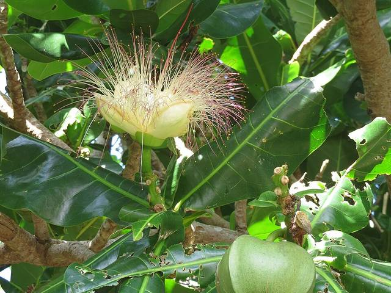
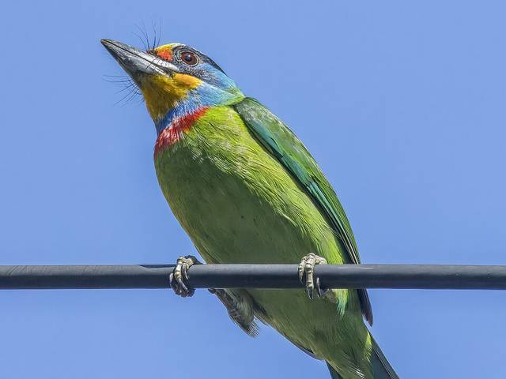
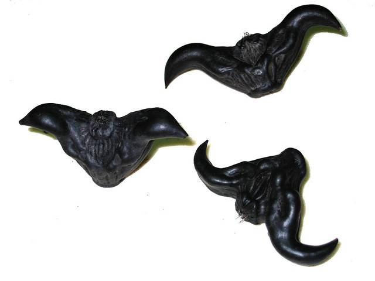
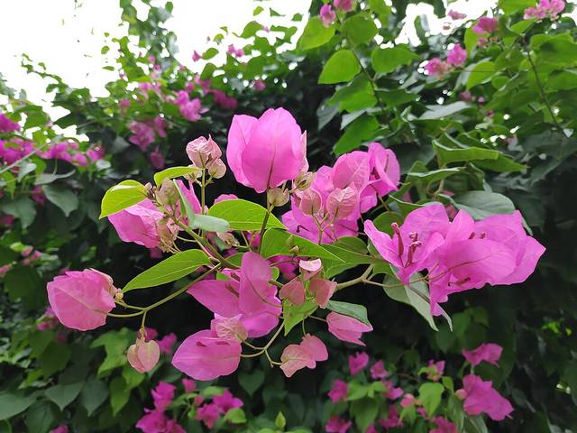
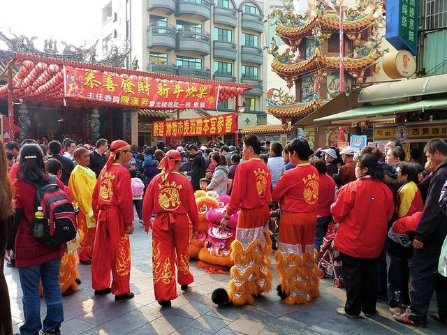

正在發生
棋盤腳花季
蓮池潭畔的棋盤腳，每天傍晚六點半前後綻放，徹夜盛放，天亮前凋落——只留給早起與晚歸的人。

蓮池潭畔的棋盤腳，每天傍晚六點半前後綻放，徹夜盛放，天亮前凋落——只留給早起與晚歸的人。

舊城牆邊的老榕陸續結果，五色鳥、白頭翁整天在樹冠間穿梭，比平常吵一些。

果貿市場出現本季第一批菱角，還帶著泥土的濕氣，量不多，賣完等下一批。

果貿社區幾條巷子的九重葛開得正盛，牆面幾乎染成一片桃紅。

三天繞境進入尾聲，本週末是最後一天，鑼鼓聲會比平常晚一點停。
下午兩點過後，東門城牆邊的老樹開始拉出一整片陰涼，是在地人午後散步的固定路線。
這個網站上的照片，目前向以下攝影師借用做示範：
之後上線，這裡會換成真正在高雄拍到這些畫面的人。